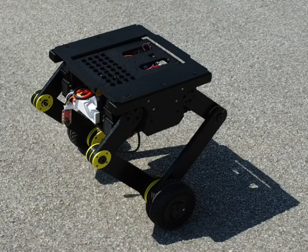
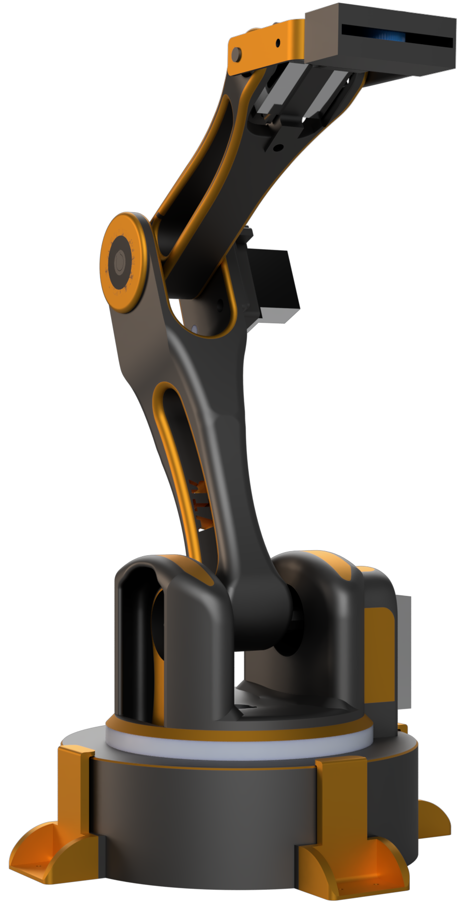
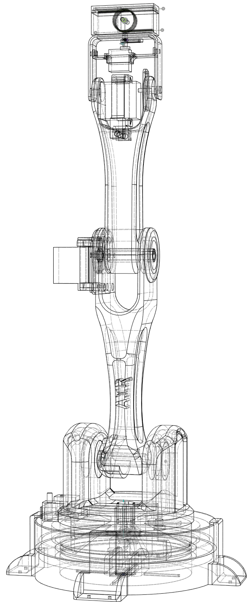

hybrid architectures
Learned policies and classical loops in the same control stack, each doing the part it's best at. Not "RL replaces control" — coordination between them, with the classical layer as a verifiable fallback.
PhD researcher · Automation & Robotics · FERI, University of Maribor
I combine reinforcement learning with classical control for legged and wheeled-biped robots — hybrid architectures where learned policies and cascaded LQI/PID loops work together, not against each other.
↓ This is not an animation. It's a cart-pole simulation running a real state-feedback controller at 240 Hz. Click the robot to shove it. Then break the controller with the sliders.
Balancing this robot is like balancing a broom standing up on your palm. You can't hold the broom still — you have to keep moving your hand so it stays under the broom. The robot does the same thing with its wheels, hundreds of times per second.
The four sliders are the robot's four little worries:
Set k₃ to zero and it stops caring about falling. It falls. Try it — it's fine, it gets back up.
Single inverted pendulum on a cart, integrated with semi-implicit Euler at 240 Hz:
θ̈ = [ g·sinθ − cosθ·(u + m·l·θ̇²·sinθ)/(M+m) ] / [ l·(4/3 − m·cos²θ/(M+m)) ] ẍ = (u + m·l·(θ̇²·sinθ − θ̈·cosθ))/(M+m)
The controller is full-state feedback, u = k₁x + k₂ẋ + k₃θ + k₄θ̇,
saturated at ±25 N — the structure an LQR design produces. Note the non-minimum-phase
behaviour: to drive the cart back to the origin, the controller must first steer it
away to lean the body toward home. In "RL-style" mode the same state vector is
fed through a saturating nonlinearity, u = umax·tanh(·) —
a hand-written stand-in that mimics the aggressive, saturation-riding character of
trained policies (it's not a live neural network; the real ones are in the papers below).
01
The field tends to frame learned and classical control as rivals. My research treats them as layers of one architecture: cascaded LQI/PID handles what it's provably good at, and reinforcement learning handles what can't be modelled cleanly — contact, impacts, recovery from the unexpected.
Learned policies and classical loops in the same control stack, each doing the part it's best at. Not "RL replaces control" — coordination between them, with the classical layer as a verifiable fallback.
Reward only what actually matters — ground contact, velocity tracking — and let balance emerge as an instrumental strategy instead of hand-coding it into the reward. If the policy needs to stay upright to track velocity, it will learn to stay upright.
Policies trained with PPO across thousands of parallel environments in Isaac Lab, then quantized and deployed on an STM32 — the same class of microcontroller running the classical loops. No offboard compute, no GPU on the robot.
02
A two-wheeled self-balancing robot with an articulated suspension, built to be dropped, shoved and thrown off things — and to keep balancing anyway. It performs dynamic maneuvers (table drops, platform jumps) under cascaded LQI/PID control, and is now being extended with reinforcement learning trained in Isaac Lab.

A wheeled biped is the cheapest possible legged robot that still has the hard problems: it is statically unstable, underactuated, and its contact state changes the moment it leaves the ground. The cascaded LQI/PID stack stabilizes pitch and tracks wheel velocity well within the linear regime — the interesting part is everything outside it. A table drop is a plant-model discontinuity: airborne, the wheel loop has nothing to push against; on impact, states jump. That boundary between regimes is exactly where the learned layer earns its place.
The current work trains PPO policies for the same platform in Isaac Lab — thousands of domain-randomized parallel environments — with a deliberately minimal reward: ground contact and velocity tracking, nothing else. Balance isn't rewarded; it emerges because falling makes velocity tracking impossible. The trained policy is then deployed on the robot's STM32, next to the classical loops it collaborates with.
| hip actuators | CyberGear geared BLDC |
|---|---|
| wheels | DDSM115 direct-drive hub motors |
| IMU | BNO086 (onboard sensor fusion) |
| compute | STM32 — control & learned policy |
| control | cascaded LQI/PID → hybrid with PPO policy |
| training | Isaac Lab, PPO, ~thousands of parallel envs |
| status | drops & jumps under classical control; RL extension in progress |
03
Control theory isn't only for robots. One of my first projects, years ago, was an MQTT plant monitor — so here is a plant with a proper PID controller on its watering pump. The sun rises and sets, the soil dries out, and the controller tries to hold the moisture you ask for. Tune it badly and you can drown the poor thing.
The pump has three feelings about the thirsty plant:
Crank Ki way up and watch the pump get so impatient it floods the pot, then sulks, then floods it again. That's called integral windup, and real engineers fight it every day.
04
Before the wheels, an arm. My mechatronics diploma thesis: a fully 3D-printed 4-DOF manipulator, designed, simulated, built and controlled end-to-end — with a machine-vision demo where the end effector follows your hand in real time.


Custom point-to-point and linear moves with quadratic, cubic and sinusoidal acceleration profiles — written from scratch, not taken from a library.
Inverse and forward kinematics via the Robotics Toolbox for Python; kinematic validation in MSC Adams, structural FEM validation in Fusion 360.
A custom UART protocol between the Python host and the STM32 that drives the joints — the same host/microcontroller split the wheeled biped uses today.
YOLO models trained for object detection, and a MediaPipe hand-tracking demo where the arm's end effector mirrors the user's hand live.
05
Diferenčno vodenje agilnega dvokolesnega mobilnega robota (Differential control of an agile two-wheeled mobile robot)
Učenje in vgrajena implementacija nevronskega regulatorja za stabilizacijo dvokolesnega robota z zavračanjem motenj (Learning and embedded implementation of a neural controller for disturbance rejection in a two-wheeled self-balancing robot)
06
Junior researcher (mladi raziskovalec) at the Faculty of Electrical Engineering and Computer Science, University of Maribor. Happy to talk about hybrid control, wheeled bipeds, reward design, or why your robot keeps falling over.